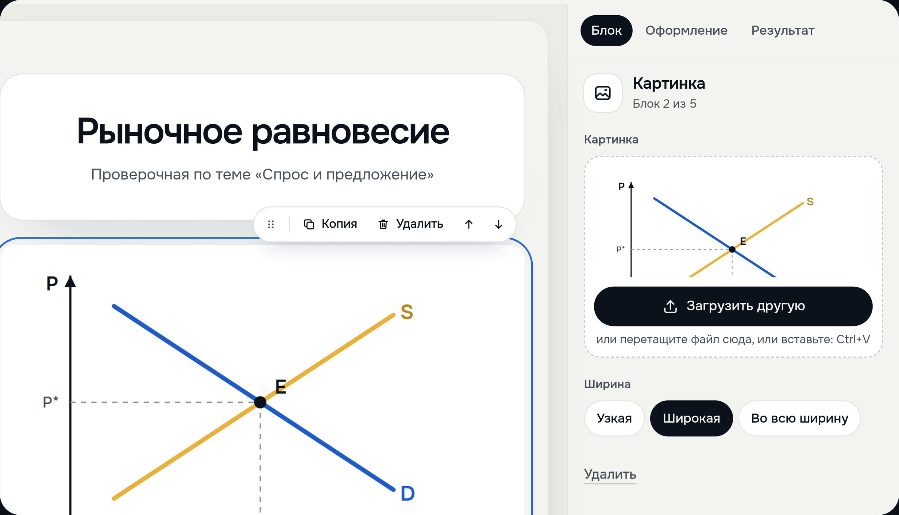

Представление блоков проекта
Преподаватель сам собирает тест.
В нём свои картинки, видео и цвет
В нём свои картинки, видео и цвет

1
2
3
1
Свою картинку
перетаскивают
на страницу
перетаскивают
на страницу
2
Или загружают,
или вставляют Ctrl+V
или вставляют Ctrl+V
3
Можно выбрать тему,
цвет, фон и шрифт
цвет, фон и шрифт
Видео вставляют ссылкой
с YouTube, RuTube, VK Видео
с YouTube, RuTube, VK Видео
8 видов блоков
и 4 типа вопросов с баллами
и 4 типа вопросов с баллами
Тест со следующего
слайда собран здесь
Третья часть Meldy это конструктор тестов. Преподаватель нажимает «Новый тест» и собирает тест как страницу из блоков. Свою картинку перетаскивают прямо с компьютера. Видео вставляют ссылкой с YouTube, RuTube или VK Видео. Можно выбрать тему, цвет, фон и шрифт. За вопросы ставят баллы. На экране результата автор пишет, что увидит участник при разном проценте баллов. Готовый тест можно вставить текстом из Word или из чата. Потом нажать «Отправить по ссылке».
Тест со следующего слайда собран именно здесь. Пять вопросов, свой график к пятому и три сообщения по баллам.
Если спросят: в конструкторе 8 видов блоков. Это обложка, заголовок, текст, картинка, видео, заметка, разделитель и новая страница. Типов вопросов 4. Один ответ, несколько ответов, верно или неверно, краткий ответ. Тестовые вопросы проверяются без ИИ.
О записи: живой сайт, 20 октября 2026 года, версия 47.4, тестовый аккаунт. Это отдельный тест «Рыночное равновесие». Вырезали только ожидание. Это загрузка картинки и паузы между шагами, на их месте мягкий переход. Ничего не ускорено. График в блоке нарисовали мы сами.
слайда собран здесь